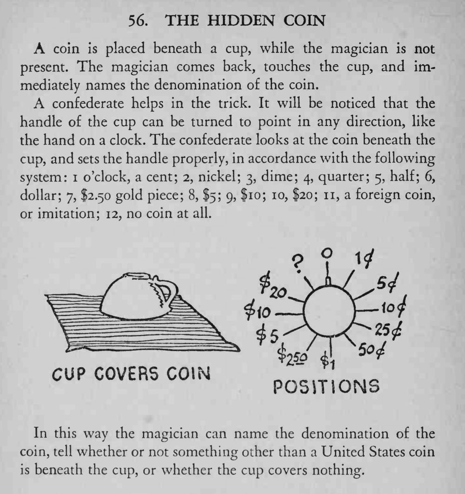

魔术师离场，观众把一枚硬币扣在杯下；他回来只碰一下杯子，就说出了硬币的面额。
暗桩转杯柄的动作要自然，最好借整理桌面的机会完成。

coin is placed beneath a cup, while the magician is not present. The magician comes back, touches the cup, and immediately names the denomination of the coin. confederate helps in the trick. It will be noticed that the handle of the cup can be turned to point in any direction, like the hand on a clock. The confederate looks at the coin beneath the cup, and sets the handle properly, in accordance with the following system: i o'clock, a cent; 2, nickel; 3, dime; 4, quarter; 5, half; 6, dollar; 7, $2.50 gold piece; 8, $5; 9, f 10; 10, $20; 11, a foreign coin, or imitation; 12, no coin at all. In this way the magician can name the denomination of the coin, tell whether or not something other than a United States coin is beneath the cup, or whether the cup covers nothing.